| 日付 | 2012年8月4日（土） - 2012年8月7日（火） | ||||
|---|---|---|---|---|---|
| 山域 | 北アルプス、妙高周辺 | ||||
| メンバー | 家族（妻、長女・1歳） | ||||
| 山行形態 | 子連れ3泊4日ホテル泊 | ||||
| アクセス | 車 | ||||
| ルート (Map2) |
|
4日目
本日は最終日。飯綱山に行くか、戸隠山に行くか迷ったが、戸隠山に行くことにする。
岩場が多いため宿の人には止められたが、自分さえ落ちなければ問題ないだろう。
昨日訪れた戸隠牧場が下山地点になるため、そこに車を停める。標高1190m。
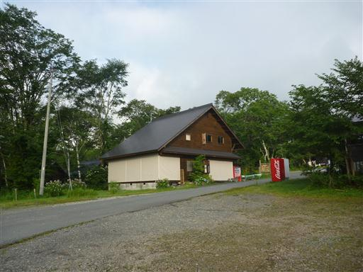
ささやきの小径と呼ばれる遊歩道を歩いて登山口を目指す。
変わり映えのしない少々退屈な道だ。ゆっくり散策するには良い道かもしれないが…
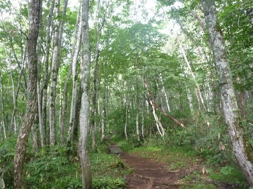
登山道入口は昨日訪れた戸隠神社奥社のすぐ側にある。
登山届を入れて出発する。
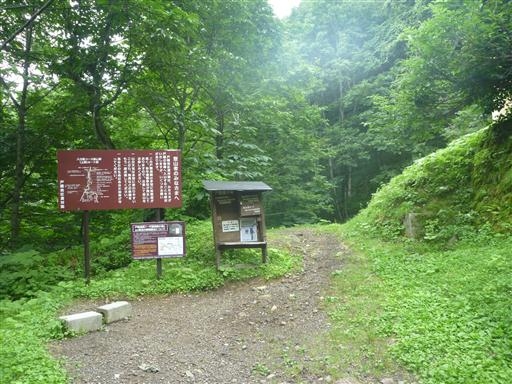
登山道はいきなりの急斜面。一気に標高を稼いでいく。
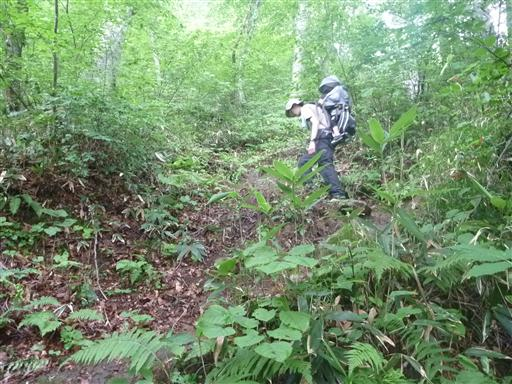
一番最初の鎖場が現れる。小手調べの簡単な鎖場だ。
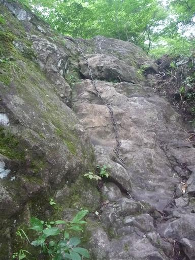
岩に何やら不気味な生物が張り付いている。
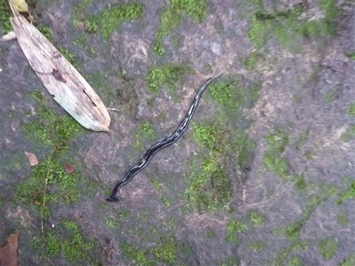
突如、目の前に岩壁が現れる。
このような景色を望むと、岩山に来たんだと強く感じられ気分が高まる。
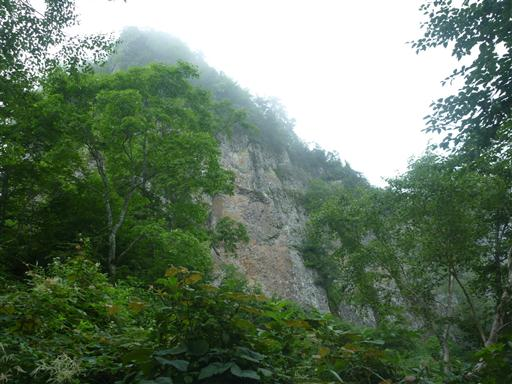
百間長屋と呼ばれる岩壁直下に付けられた道を歩く。
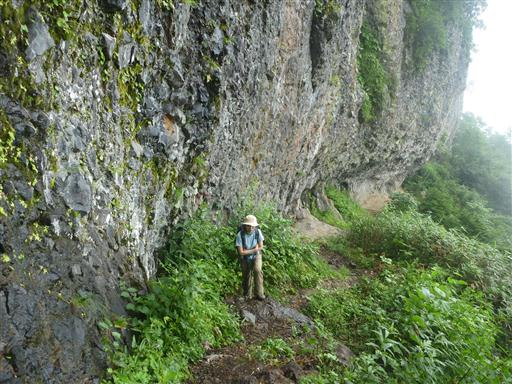
途中の小さな岩窟に祠が祀られている。
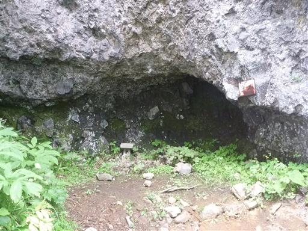
振り返ると少しだけ視界が広がる。
今まで完全に雲に覆われていたため、ほんの少しでも視界が広がるとうれしいものだ。
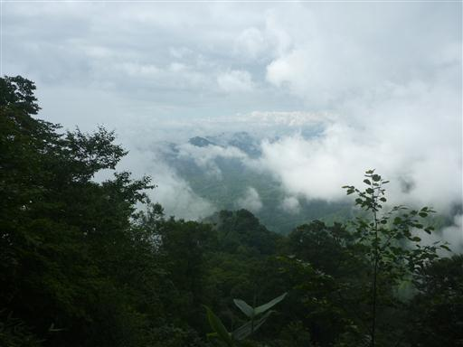
この辺りから鎖場が連続して現れるようになる。
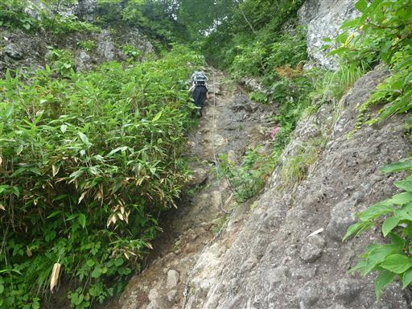
登山道から外れたところにある岩頭に鎖が設置されていたので登ってみる。
晴れていれば絶景が広がるところだ。
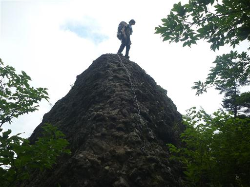
この辺り一帯は急峻な崖だらけだ。
その崖にも点々と高山植物が花を咲かせている。
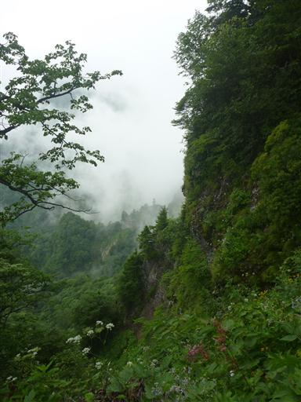
鎖場は続く。ホールドは多いものの難易度はそこそこ高い。
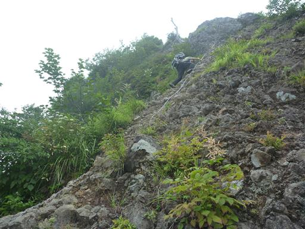
そして目の前に本コース最大の難所・蟻ノ戸渡りが現れる。
幅50cmの狭い岩稜が20m程続く。両側は100mを超える断崖絶壁だ。
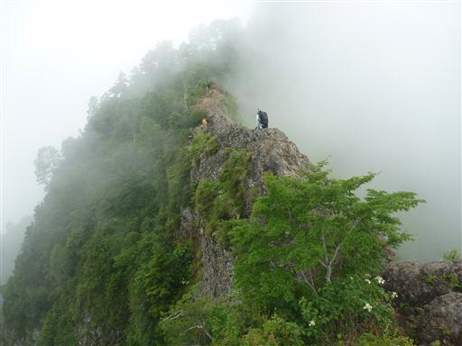
蟻ノ戸渡りを通過する。荷物が重いとバランスが悪くなって歩きにくいところだ。

無事通過後、上から蟻ノ戸渡りを見下ろす。
もう少し天気が良ければ絶壁が見えるのだが…
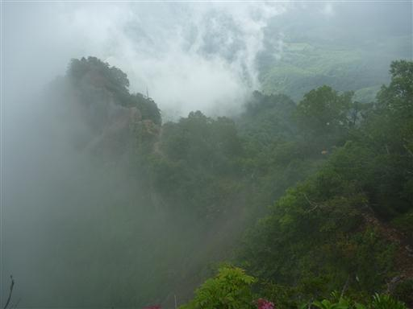
八方睨に到着。ここで大きく展望が広がる。
ここは西岳へのルートと戸隠山へのルートの分岐点だ。
雲は多いが頭上は晴れていて青空が広がっている。
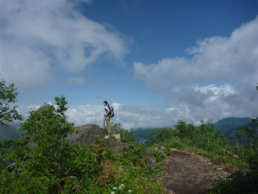
雲の中に見える一際高いピークは高妻山だ。
初めて近くから高妻山を望むが、これほど目立つ山だとは思わなかった。
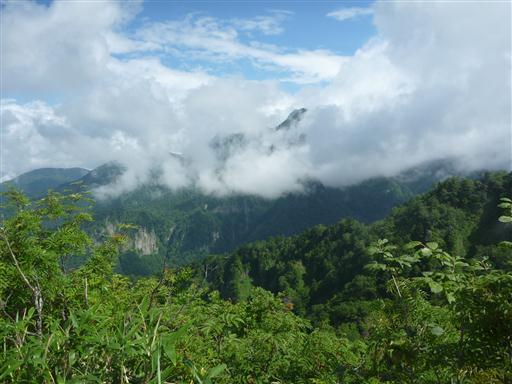
あとは戸隠山まで尾根道を歩くのみ。危険はないが案外藪っぽい道だ。
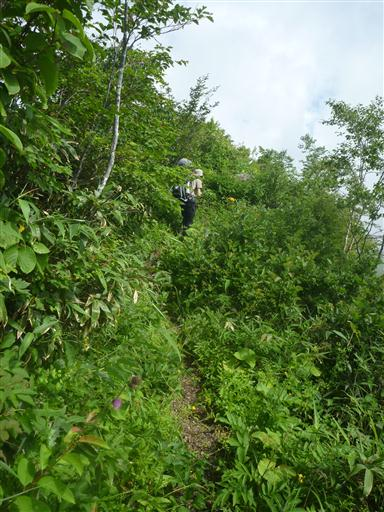
戸隠山山頂に到着。標高1904m。
多くの岩場を超えてようやくたどり着いた山頂だ。
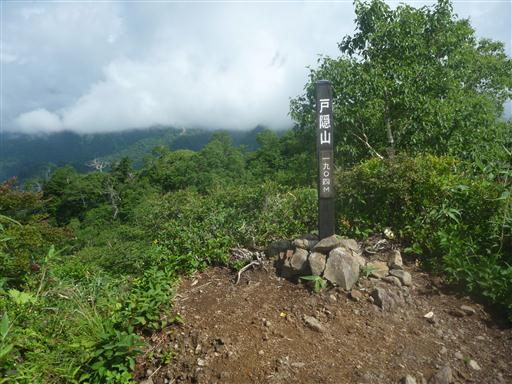
迫力ある西岳が間近に見えている。
そこそこ展望の良い山頂だが、直前にあった八方睨の方が明るく開けている。
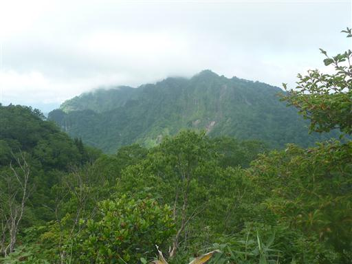
山頂で昼食をとったら稜線を先に進む。右側は断崖が続いている。
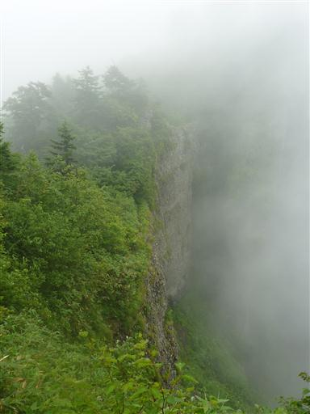
最悪なことに途中で雨が降ってくる。
ザックに雨よけのカバーを付けるが、強い雨に耐えられる仕様ではない。
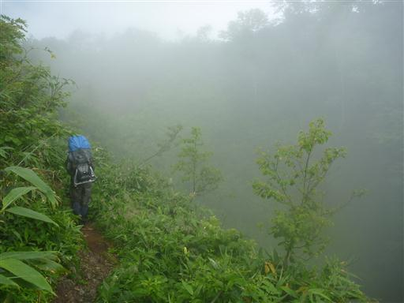
九頭龍山に到着。やたら大きな三角点が埋まっている。
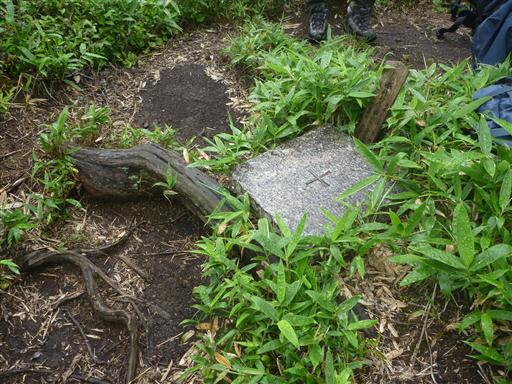
幸い雨はすぐに止んでくれた。雲は多いが青空が顔を出している。
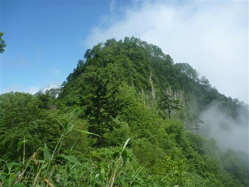
歩いて来た稜線を振り返る。西側の斜面は比較的穏やかだ。

目の前に高妻山が迫る。山頂部が見えそうでなかなか見えない。
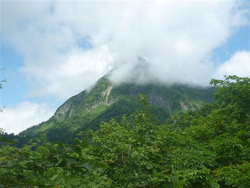
不動避難小屋に到着。ここは高妻山への登山道との分岐点。
小屋は緊急時以外使用不可ということだが、便利な位置にあるため使う人はそこそこいるみたいだ。
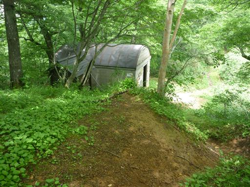
高妻山への道と分かれて戸隠牧場へと続く下山道に入っていく。
道には水が流れていてまるで沢を歩いているようだ。
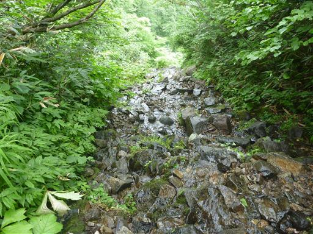
こちらの登山道にも鎖場が2箇所ある。
すぐ隣に滝があるため、岩が湿っていて滑りやすい。
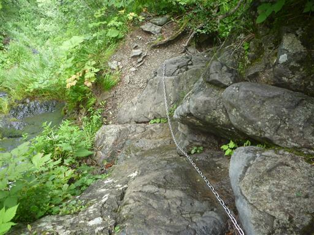
さらに岩壁をトラバースする。鎖は設置されているが足を滑らせると危険な場所だ。
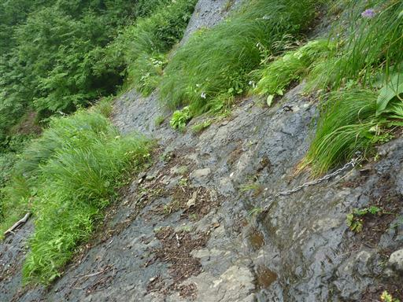
鎖場からは岩壁を流れ落ちる不動滝が良く見える。
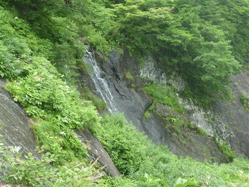
登山道は完全な沢となる。小さな石が転がる沢を下って行く。
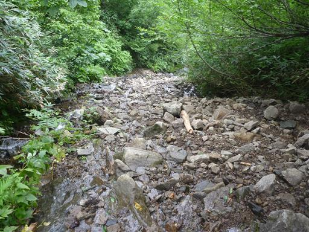
滑滝にかかる鎖場。傾斜は緩いがここも滑りやすいところだ。
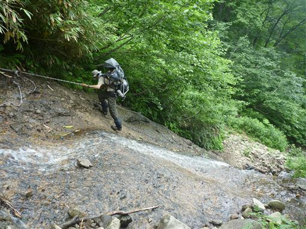
滑滝を見上げる。滝の右に鎖が設置されている。
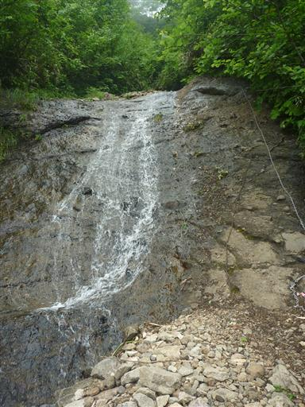
水量はだんだんと増えてくる。沢を何度か渡りながら下って行く。
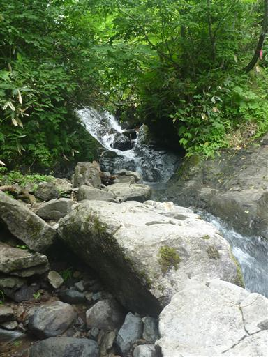
傾斜が緩くなってくると沢と離れ、牧場に到着する。
牧場との境に柵が設置されている。
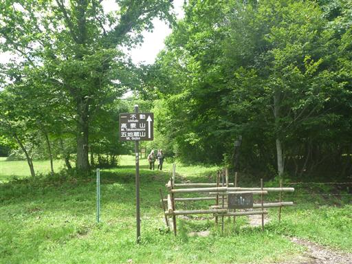
山には雲がかかっているが下界はきれいに晴れている。
計画では一番重要な日だった3日目が雨で、目的の五竜岳に登ることは叶わなかった。
しかし、アルプスの雄大な景色をいくらか望むことができたし、
最終日には難易度の高い戸隠山にも登れたことで、
天気が悪いなりにも、それなりに充実した山登りをすることができた。
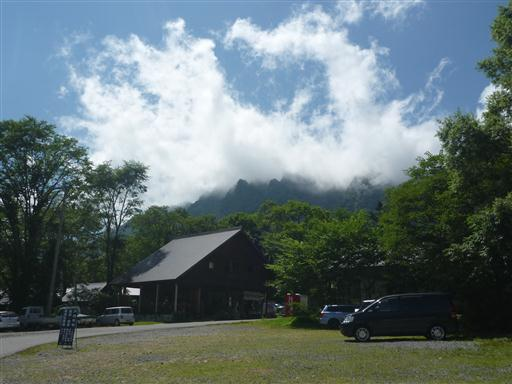